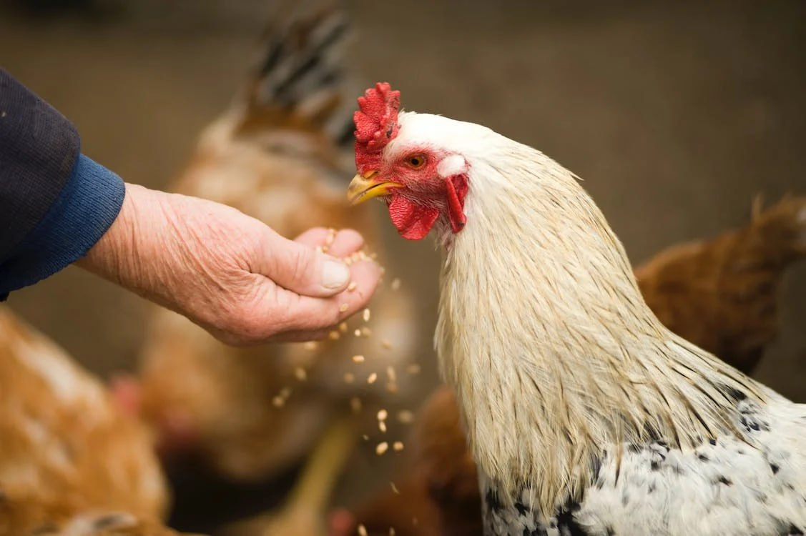

Lesson 7
UNIT 2
My specialty is techologist
BASIC LIVESTOCK PRODUCTION

Animal feeding
Learn the active vocabulary of the Lesson and be ready to
use it in your further work:
Nutrients
– поживні речовини; feeds
n – корм; pasture
n – пасовище; hay
n – сіно; silage
n – силос; cereal
n – зернові; surplus food crops – надлишки продовольчих культур; roughage n – грубий корм; forage n –фураж; concentrates
– концентрати; by-products
– побічні продукти; nomadic
adj. – кочовий; residue
n – залишок; digestibility n – засвоюваність; comparatively adv – відносно; порівняно; starch n – крохмаль; legumes – бобові; prolonge v – подовжити;
продовжувати; convert v – перетворити; assimilate v – асимілювати; field-cured hay -
сіно польового в'ялення; additives
– добавки; edible
adj – їстівний; mature v – дозрівати.
Read and translate the text:
ANIMAL NUTRITION Animals
in general require the same nutrients as humans. Some feeds, such as
pasture
grasses, hay and silage crops, and certain cereal grains, are grown specifically
for
animals. Other feeds, such as sugar-beet have been processed for human use.
Surplus
food crops, such as wheat, other cereals, fruits, vegetables, and roots, may
also be fed to animals. In this way such surpluses are converted into meat,
milk, and eggs for the human diet. History does not record when dried roughage
or other stored feeds were first given to animals. Most early records refer to
nomadic people who followed the natural feed supplies. When animals were
domesticated and used for work in crop production, some of the residues were
doubtless fed to them. The
feeds produced today are the result of research, experimentation, and chemical
analysis and are the subject of continuing study by agricultural scientists.
Animal
feeds are divided into two general categories: concentrates and roughages. The
concentrates are rated high in terms of the digestibility of their nutrients but
low in fibre content, while the roughages are high in fibre and comparatively
low in digestive nutrients. The concentrates include wheat, corn (maize), oats,
rye, barley, and the sorghums. Such cereals are easily digestible and rich in
starch. Other concentrates include the high-protein meals that are made from
such vegetable seeds as soybeans, field peas, peanuts, sunflower seeds, and
cottonseed. The
most commonly cultivated roughages are pasture grasses and plants. Pasture is
highly nutritious, rich in protein and vitamins, and much cheaper to grow for
grazing than feed products that must be harvested. Second in importance are the
various kinds of hay, which are produced by drying grasses and legumes. The hay
is dried in order to preserve nutrients that can be lost by exposure to rain and
prolonged sunshine. Legume hay is the richest in protein. Other forms of
roughage include silage. Among the vitamins needed by animals, the one most
often lacking in basic animal feeds is vitamin A. It is especially important for
growth, reproductive quality, and resistance to various diseases and infections.
Green-growing crops are rich in carotene, a substance that animals easily
convert to vitamin A. Vitamin D is also important in order to enable animals to
assimilate and use calcium and phosphorus. Field-cured hay, fish oil, and other
feed oils are good sources of vitamin D. The proper balance of minerals is achieved in animal diets through
supplements and additives. The idea of making silage as a means of preserving
and utilizing more of the corn plant was gradually developed in Europe and
brought from France to the United States in the 1870s.
GRAMMAR EXERCISES
I. Answer the following questions:
1.
What is called feed? 2.
Why is it necessary to select and prepare feed for animals? 3.
What categories are animal feeds divided into? 4.
What are the characteristics of the concentrates and the roughages?
5.
What do the concentrates include? 6.
What are the most commonly cultivated roughages? 7.
Why is pasture one of the important kinds of roughages? 8.
How are the various kinds of hay produced? 9.
What other forms do roughages include? 10.
Why is vitamin A especially important for animal’s feed? 11.
What is the role of vitamin D in animal diet? 12.
What plants are rich in vitamins A and D? 13.
How can the proper balance of minerals be achieved in animal diets? 14
What nutrients do animals require? 15.
What feeds are specifically grown for animals? 16.
What other feeds may be fed to animals? 17.
When was dried roughage or other stored feeds first given to animals?
18. What countries began to preserve corn plants by making
silage?
II. Read and translate the text:
CEREAL OR GRAIN CROPS Cereals
are those members of the grass family which produce edible seed. Wheat, barley,
rye, oats, corn and rice are known to be most common and most valuable
cereals. The cereals grown in the temperate zone are known as small grains. They
are wheat, barley, oats and rye. They may be spring or winter annuals. Corn and
rice are warm season crops. They are to be seeded in spring or early summer and
mature in the fall. Of
the cereals raised wheat, rice and corn are the world's three most important
grain
crops. Although rice is the main food of more people, wheat is the first in
importance as to the area sown and the total annual production. There
are some reasons why cereals are considered to be the man's leading food source.
They produce food in a relatively short period of time, for they are annuals. In
addition, they are adapted well to different soil and climatic conditions.
Cultural practices required in growing grain crops are quite similar. Grain is
easily drilled, harvested, cleaned and stored. All these operations are known to
be highly mechanized. Though cereals do not supply much protein and vitamins, they are
believed to remain a major source of food for people.
III. Decide whether the statements are true or false according to
the text: 1)
Cereals do not need enough moisture. – a) true b) false 2)
Cereals are one of the most important food sources for man because they are
annuals
and mature in a relatively short period of time. – a) true b) false 3)
Wheat is the least in importance for people. – a) true b) false
4)
Cereals are seeded in the fall and mature in spring or early summer.
– a) true b) false
5)
Wheat, barley, oats and rye may be spring or winter annuals. – a) true b) false
IV. Find the equivalents:
Хлібні зернові культури,
ячмінь,
дозрівати,
цінні злакові культури,
достатньо вологи, силос,
грубий корм, побічні продукти, засвоюваність, крохмаль, бобові, асимілювати,
сіно польового в'ялення, добавки, їстівний, поживні речовини для травлення,
пшениця, кукурудза, овес, жито, ячмінь, сорго, соєві боби, польовий горох,
арахіс, насіння соняшнику, насіння бавовнику.
V. Complete the sentences:
1)
... is considered to be most common crop in our region. 2)
Plants are known to absorb food from the soil by their … . 3)
Fine and mellow soil is very important for corn, for it provides … for plant
growth. 4)
Cereals should not be grown for many years … . 5) Cereals do not supply much … .
VI. Make up the sentences:
1)
main / of / people / food / is / the / many / rice. 2)
adapted / soil / cereals / to / are / well / different. 3)
are / the / common / wheat / barley / rye / oats / corn / rice / cereals / and /
most. 4)
in / zone / cereals / temperate / are / the / grown. 5) and / are / season / warm / crops / corn / rice.
VII. Decide whether the statements are true or false according to
the text:
1)
We know that farm animals are important sources of food for people. – a) true b) false
2)
Products that are produced by farm animals are highly nutritious. – a) true b) false
3)
The production cycle of hogs is much longer than that of cattle or sheep.
– a)
true b) false 4)
Dairy cattle may be used in making various wool products. – a) true b) false
5)
About six months is usually required to fatten a pig. – a) true b) false
ANIMAL HUSBANDRY Animal
husbandry, a branch of agricultural production, includes the breeding of farm
animals and their uses. Farm
animals are highly important sources of food for man. They are known to produce
highly nutritious products such as milk, meat and eggs. In addition, the skin of
animals, down and feather of poultry and wool of sheep are used as raw materials
to produce clothing and for many other purposes. The
most important group of farm animals is cattle. There are four types of cattle.
They
are dairy cattle, beef cattle, draft cattle and dual-purpose cattle. Dairy
cattle, that is, dairy cows provide milk that may be used in making various
dairy products. Beef cattle are the producer of beef. One can raise dual-purpose
cattle producing both milk and meat. Draft cattle and horses are almost
everywhere replaced by agricultural machinery. Important sources in producing human food are sheep and hogs.
Sheep are raised for two purposes: wool and mutton production. The production
cycle of hogs is much shorter than that of cattle or sheep. In other words,
unlike the other farm animals hogs are rapid growing ones. They may be fattened
in less than six months. That is why hog breeding is one of the most important
and economic ways of solving the problem of supplying the population with meat.
VIII. Underline the predicate in each sentence, define their tense
form. Translate the sentences:
1)
Sugar beet cultivation is very popular in every country in Europe. America and
in many other countries throughout the world. 2)
A common method of growing cabbage is to sow the seed in a green-house or
hotbeds in seed boxes 4-6 weeks before outdoor planting. 3)
Maize originated in America. 4)
Rye is a drought resistant plant which thrives under a great variety of
conditions. 5) In two years my brother will become an ecologist.
IX. Complete the sentences:
1.
Poultry supply us with meat, eggs, down and …. 2.
We know that farm animals are … sources of food for people. 3.
One should provide farm animals with proper …. 4.
The problem of supplying the population with … is the one that must be solved in
the near future. 5. Products that are produced by farm animals are highly ….
X. Make up sentences with the verbs:
To
prolonge; to
convert; to
record; to
domesticate; to
produce; to
cultivate; to
assimilate; to
preserve; to
mature.